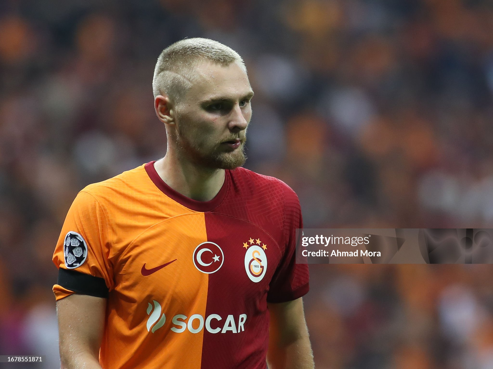

| Nombre | Posición | Edad | Bibliografía | Portada |
|---|---|---|---|---|
| Kasper Schmeichel | Portero | 38 |
Experimentado portero, veterano de la selección danesa, conocido por su liderazgo y grandes reflejos. |
|
| Mads Hermansen | Portero | 25 |
Portero joven con gran proyección, destacado en competiciones europeas y promesa del fútbol danés. |
|
| Joachim Andersen | Defensa central | 29 |
Defensa sólido, con experiencia en ligas europeas, fuerte en duelos aéreos y anticipación. |
|
| Jannik Vestergaard | Defensa central | 33 |
Defensa experimentado, gran presencia física, habitual en la selección danesa en torneos internacionales. |
|
| Victor Nelsson | Defensa central | 26 |
Defensa joven con buena lectura del juego, rápido en coberturas y sólido en duelos defensivos. |
 |
| Rasmus Kristensen | Lateral derecho | 28 |
Lateral con proyección ofensiva, velocidad por la banda y buena técnica de centro. |
|
| Christian Nørgaard | Centrocampista | 31 |
Centrocampista defensivo con gran capacidad de recuperación y distribución de balón. |
|
| Jacob Bruun Larsen | Extremo | 26 |
Extremo veloz, capaz de desbordar y asistir, aporta dinamismo al ataque danés. |
|
| Kasper Dolberg | Delantero | 27 |
Delantero centro, fuerte en definición y juego de área, pieza clave en el ataque. |
|
| Rasmus Højlund | Delantero | 22 |
Joven delantero con gran capacidad de finalización y juego aéreo, futuro referente ofensivo. |
|
| Christian Eriksen | Centrocampista | 33 |
Mediocampista creativo y experimentado, líder del equipo y especialista en pases y tiros de media distancia. |
|
| Andreas Christensen | Defensa central | 29 |
Defensa central con excelente lectura del juego, firme en la marca y confiable en salida de balón. |